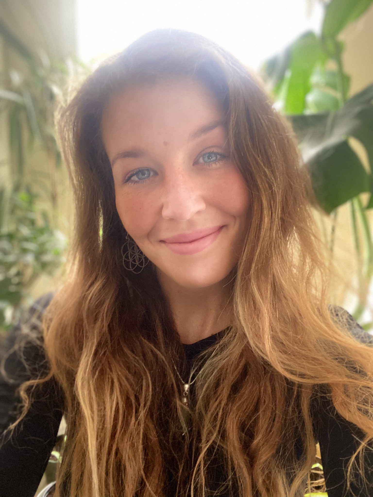

Natalie Shaw

Objective/Summary
Flexible, reliable and hardworking offering 17 years’ experience working in fast
paced environments, with superior customer service skills.
Able to work under pressure whilst maintaining an approachable, helpful, and
enthusiastic demeanour with strong organisation and logistical skills.
Adaptable and attentive to detail with the ability to work independently or as
part of a team, using solid communication and time management skills.
Pro-active and keen to learn, looking to join a new team and make a positive
contribution.
Education
- University of Plymouth (2012-2014): BSc (hons) Marine Biology and Coastal Ecology (2-1)
- Newquay Campus, Cornwall College, University of Plymouth (2010-2012): FdSc Marine Conservation
Work Experience
February 2021 - present
- Ensure Food hygiene and kitchen are upto the upmost standar
- Create and execute Dishes as a solo chef
- Paperwork and prep
March 2023 - Present
- Plan and execute classes
- High levels of Customer care
- Training and on going education to provide the best possible class
Skills
- Customer Service
- Adaptable
- Hospitality
Awards & Certifications
- Emergency First Responder
- St Johns Ambulance first aid
- DBS Check
- Full clean UK Driving License (14 years)
- TEFL
- Powerboat level 2
- SSI Open water Instructor
- PADI Divemaster
- Diving Specialities upon request
- food Safety
- 200 Hour Yoga Teacher Training
Links to other areas about me